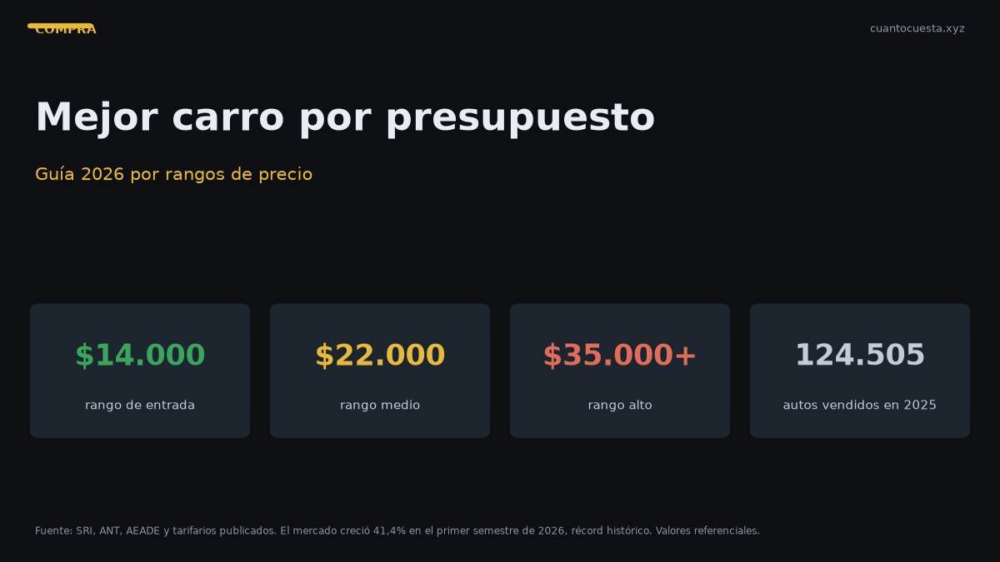

Mejor carro para comprar en Ecuador 2026: guía por presupuesto
Cuatro rangos de presupuesto y un ganador claro en cada uno: desde $14.000 hasta $35.000+, con precios, consumo y garantía verificados del mercado 2026.

2026 es el peor año para dudar y el mejor para comprar: el mercado ecuatoriano cerró el primer semestre con 78.185 unidades, +41,4% y récord histórico. Más volumen significa más competencia entre agencias, más versiones disponible y mejores promociones.
Esta guía corta por presupuesto, no por gusto. Cuatro rangos, un ganador claro en cada uno, con el runner-up para quien tenga un perfil distinto.
Datos de contexto: en 2025 se vendieron 124.505 vehículos nuevos (+15% frente a 2024). El 18% de las ventas de 2026 ya son híbridos o eléctricos. Pichincha concentra el 43% de las ventas y Guayas el 27%.
Lo que está pasando en el mercado
| Marca | Unidades H1 2026 |
|---|---|
| Kia | 12.512 |
| Chevrolet | 9.341 |
| GWM | 4.329 |
| Hyundai | 4.232 |
| Toyota | 3.808 |
| Chery | 3.785 |
El top 6 concentra más del 60% de las ventas. Comprar dentro de esas marcas te garantiza red de servicio, repuestos en stock y un mercado de usados líquido. Fuera de esa lista, la espera del repuesto es tuya.
Rango $14.000 – $17.000: entrada al auto nuevo
| Modelo | Precio desde | Tipo | Nota |
|---|---|---|---|
| Hyundai Grand i10 | $13.990 | Hatchback A | 1.690 unidades en 2025: segundo de pasajeros más vendido |
| Kia Soluto | $15.799 | Sedán B | 8.725 unidades: sedán más vendido del país |
| Suzuki Swift | $15.990 | Hatchback B | Bajo consumo y bajo costo de mantenimiento |
| Chery Arrizo | $16.000 | Sedán B | Repuestos accesibles; Chery creció +50,1% en H1 2026 |
| Chevrolet Sail | $16.500 | Sedán B | 1.5 L, 105 hp |
Ganador: Kia Soluto
Por qué gana este rango:
- Maletero de 475 L — más que cualquier hatchback del rango, y más que varios SUV compactos
- Garantía de 10 años o 160.000 km — la más larga de los cuatro
- Consumo mixto de 15,5 km/l (manual) y 14,2 km/l (automática)
- Motor 1.4 L de 94 hp, 132 Nm, tanque de 43 L, 1.095 kg de peso
- 94 hp alcanzan para ciudad y carretera sin sobrar; es un auto de uso, no de prestaciones
Runner-up: Hyundai Grand i10 si tu tope real es $14.000 y solo necesitas ciudad. Es $1.809 más barato que el Soluto y fue el segundo auto de pasajeros más vendido de 2025.
Mención aparte: Suzuki Swift. Si el criterio es costo de mantenimiento y consumo, el Swift es el más económico de operar del rango. Pierde en espacio y en garantía frente al Soluto.
Rango $18.000 – $22.000: el salto al SUV
Aquí aparece la decisión central de la mayoría de compradores ecuatorianos.
| Modelo | Precio desde | Tipo | Nota |
|---|---|---|---|
| Nissan Versa | $18.500 | Sedán B | 1.6 L, 106 hp |
| Kia Soluto EX | $18.790 | Sedán B | 6 airbags, cámara y pantalla 8" |
| Chevrolet Groove LTZ | $19.999 | SUV compacto | SUV más vendido del país |
| Kia Sonet Entry | $21.599 | SUV subcompacto | 6 airbags de serie |
Ganador: Chevrolet Groove
Es el SUV más vendido de Ecuador con 4.063 unidades en 2025, y por buenas razones:
- Entra al rango SUV desde $19.999 en la versión LTZ
- Cuota desde $309 al mes — el acceso más realista a un SUV nuevo
- 1.5 L DVCP de 98 hp y 143 Nm, más torque que el Soluto
- 4 airbags, ABS + EBD, control electrónico de estabilidad, asistente de arranque en pendiente
- Asientos abatibles 60/40, ecocuero, pantalla táctil de 8"
- Garantía de 7 años o 150.000 km
- Red de servicio Chevrolet en todo el país, incluidas ciudades intermedias
Runner-up: Kia Sonet Entry. Si la seguridad pesa más que el precio, el Sonet ofrece 6 airbags de serie en la versión de entrada, control de estabilidad y garantía de 10 años o 160.000 km por unos $1.600 más que el Groove.
Si andas 100% en asfalto y no necesitas altura: el Soluto EX a $18.790 trae 6 airbags, cámara de reversa y pantalla de 8", y te ahorra $1.209 frente al Groove.
Rango $25.000 – $35.000: familia o trabajo
Este rango se parte en dos caminos según para qué necesitas el vehículo.
| Modelo | Precio | Unidades 2025 | Perfil |
|---|---|---|---|
| GWM Poer | $27.000 – $38.000 | 4.092 | Camioneta 4x4, ensamblada en Ambato |
| Hyundai Tucson | $32.499 – ~$40.000 | 2.395 | SUV mediano, confort familiar |
| Chevrolet D-Max | $34.000 – $46.000 | 5.515 | Camioneta 4x4 más vendida del país |
Ganador por relación precio/producto: GWM Poer
- Arranca en $27.000: la 4x4 nueva más accesible del mercado
- Ensamblada en Ambato por Ciauto — repuestos y tiempos de entrega locales
- 4.092 unidades en 2025, segunda camioneta más vendida de Ecuador
- Precio más bajo que camionetas japonesas o americanas equivalentes
Ganador si no necesitas platón: Hyundai Tucson
- $32.499 de entrada, motor 2.5 L atmosférico, transmisión automática
- 6 airbags y garantía de 5 años sin límite de kilometraje — la única del comparativo sin tope de kilómetros
- 2.395 unidades en 2025; 872 unidades en el top 5 SUV de 2026
- Comparte plataforma con el Kia Sportage, pero con perfil más orientado al confort familiar
Para quién cada uno: si cargas material, herramientas o sales a camino de tierra, la Poer. Si cargas niños, compras de supermercado y viajas a la costa cada feriado, el Tucson.
Rango $35.000+: camioneta grande
| Modelo | Precio | Unidades 2025 | Dato clave |
|---|---|---|---|
| Chevrolet D-Max | $34.000 – $46.000 | 5.515 | Camioneta más vendida del Ecuador |
| Toyota Hilux | $38.000 – $55.000 | 1.483 | Intervalos de mantenimiento más largos; alta retención de valor |
Ganador: Chevrolet D-Max
Es la camioneta más vendida del país con 5.515 unidades en 2025, más de tres veces las del Hilux. Gana porque:
- Entra al rango desde $34.000, hasta $4.000 por debajo del Hilux base
- Red de servicio Chevrolet en todo el país, incluidas ciudades intermedias
- Volumen de ventas = disponibilidad de repuestos y reventa fluida
Runner-up: Toyota Hilux. Si vas a vender en 3 a 5 años, la alta retención de valor del Hilux en el mercado de usados puede compensar la diferencia de precio. Sus intervalos de mantenimiento más largos que el promedio también reducen el paso por taller.
Tabla resumen: el ganador de cada rango
| Presupuesto | Ganador | Precio desde | Alternativa |
|---|---|---|---|
| $14.000 – $17.000 | Kia Soluto | $15.799 | Hyundai Grand i10 / Suzuki Swift |
| $18.000 – $22.000 | Chevrolet Groove | $19.999 | Kia Sonet Entry |
| $25.000 – $35.000 | GWM Poer (trabajo) / Hyundai Tucson (familia) | $27.000 / $32.499 | Chevrolet D-Max |
| $35.000+ | Chevrolet D-Max | $34.000 | Toyota Hilux |
Costos que debes sumar a cualquier rango
Antes de firmar, suma estos rubros a tu presupuesto mensual:
- Matrícula: ~$180 al año
- Seguro: ~4% del valor del vehículo el primer año ($800 en un auto de $20.000)
- Combustible: Extra/Ecopaís a $3,21 el galón; Súper a $4,89
- Mantenimiento anual por marca: desde $300–500 (Nissan) y $300–600 (Toyota) hasta $800–1.200 (RAM)
En un auto de $20.000, entre combustible, seguro, matrícula y mantenimiento estás mirando entre $175 y $250 al mes solo en costos de operación, antes de la cuota del crédito.
Veredicto final
Si tuviera que elegir un solo auto para el comprador promedio ecuatoriano en 2026, es el Kia Soluto: el más vendido de los sedanes, garantía de 10 años o 160.000 km, 475 L de maletero y un piso de precio que deja margen para el seguro y la matrícula.
Si el presupuesto llega a $19.999 y quieres SUV, Chevrolet Groove: más vendido de su categoría y con red de servicio nacional.
Si el vehículo es herramienta de trabajo, GWM Poer a $27.000 ensamblada en Ambato es la compra más racional del mercado. Y si el criterio es valor de reventa a futuro, Toyota Hilux.
Ninguno de estos cuatro es una apuesta riesgosa. El error caro en Ecuador no es elegir mal el modelo, es comprar fuera de las seis marcas con mayor volumen y quedarse esperando un repuesto.
Precios de lista referenciales a septiembre de 2026. Varían por agencia, versión, ciudad y promoción. Verifica la ficha de la versión exacta en concesionario. No constituye asesoría financiera.
Sigue leyendo
D-Max vs GWM Poer vs Hilux: qué camioneta conviene en Ecuador
Las tres camionetas 4x4 más vendidas de Ecuador frente a frente: precio, ensamblaje local, mant
Kia Soluto vs Chevrolet Groove: cuál conviene en Ecuador (2026)
El sedán más vendido de Ecuador contra el SUV más vendido: precio, consumo, espacio, seguridad
Kia Sonet vs Hyundai Creta: comparativa completa en Ecuador
Sonet y Creta no compiten en el mismo segmento. Comparamos espacio, consumo, garantía y precio
Cómo usamos estos datos
Las cifras de esta guía provienen de fuentes públicas oficiales y tarifarios de concesionarios publicados. Los valores son referenciales: tasas municipales, promociones y precios de repuestos varían. Verifica siempre en la entidad o concesionario antes de decidir.